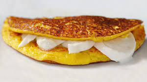

Cachapas

La cachapa es uno de los platos estrella de la comida de Venezuela y Colombia.
Consiste en una torta de maíz de textura rústica que se elabora con maíz tierno y unos pocos ingredientes más.
Se cree que se originó en la zona central de Venezuela, y que fue elaborada por primera vez por los indígenas.
A esta torta de maíz se la conoce como cachapa de budare.
Ingredientes
450 gramos de maíz en grano (puede ser congelado o de lata)
1 cucharada de harina de trigo (opcional)
2 cucharadas de harina de maíz
1 cucharada de mantequilla
queso mozzarella en rebanadas para rellenar las cachapas
(ya que donde vivimos no encontramos el “queso e mano”)
Preparación
- En primer lugar, escurrimos el maíz enlatado.
Debemos retirar toda el agua que podamos para que la masa
no nos quede con un exceso de líquido.
- Una vez escurrido, ponemos el maíz en un cuenco mediano.
Añadimos al cuenco el resto de ingredientes de la receta.
- Con la ayuda de una batidora eléctrica, trituramos todos los ingredientes
hasta obtener una pasta de textura rústica,
en la que aún se aprecien algunos trozos de maíz.
- Cuando tengamos la masa lista, tapamos el cuenco con un plástico y
lo metemos en la nevera donde lo dejamos reposar durante 1 hora.
- Pasado el tiempo de reposo, sacamos el cuenco de la nevera.
Ponemos a calentar una sartén cuya base habremos engrasado ligeramente con un poco de mantequilla.
- Cuando la sartén haya cogido calor, distribuimos una buena cantidad de masa en el centro de la sartén.
Para ello, nos podemos ayudar de un cucharón de servir sopa.
Extendemos un poco la masa hasta que tengamos una torta de, aproximadamente, un centímetro de grosor.
- Cocinamos unos minutos por ambos lados a fuego medio.
Le damos la vuelta cuando esté dorada por abajo y por arriba presente cierta consistencia.
- Repetimos el proceso con el resto de masa,
engrasando un poco la sartén entre cachapa y cachapa si fuese necesario.
- Nada más retirar de la sartén, untamos nuestras tortas con un poco de mantequilla o margarina,
las rellenamos de queso en lonchas (u otro ingrediente) y servimos calientes.
Menú